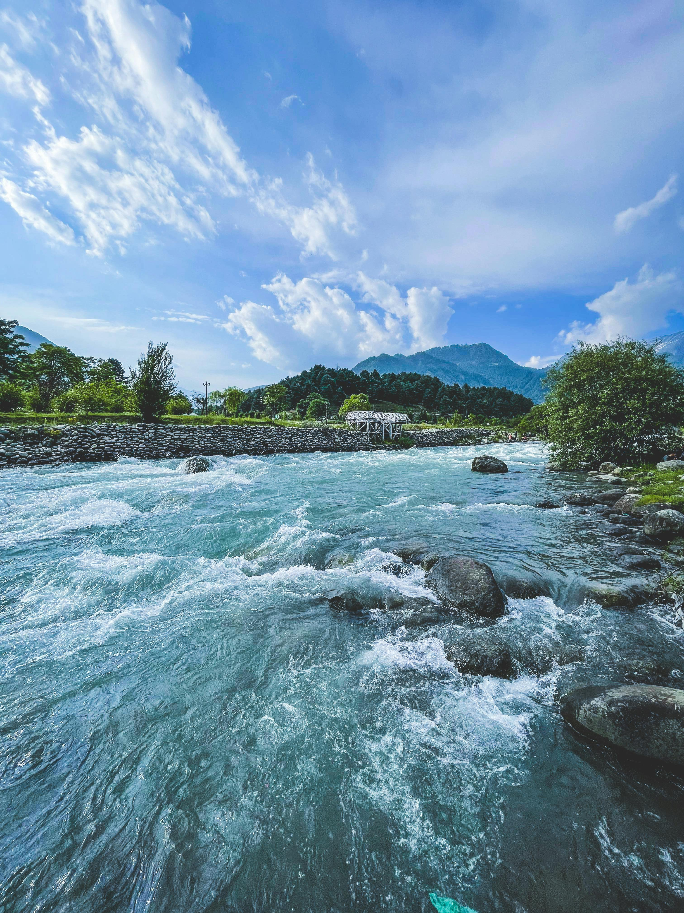
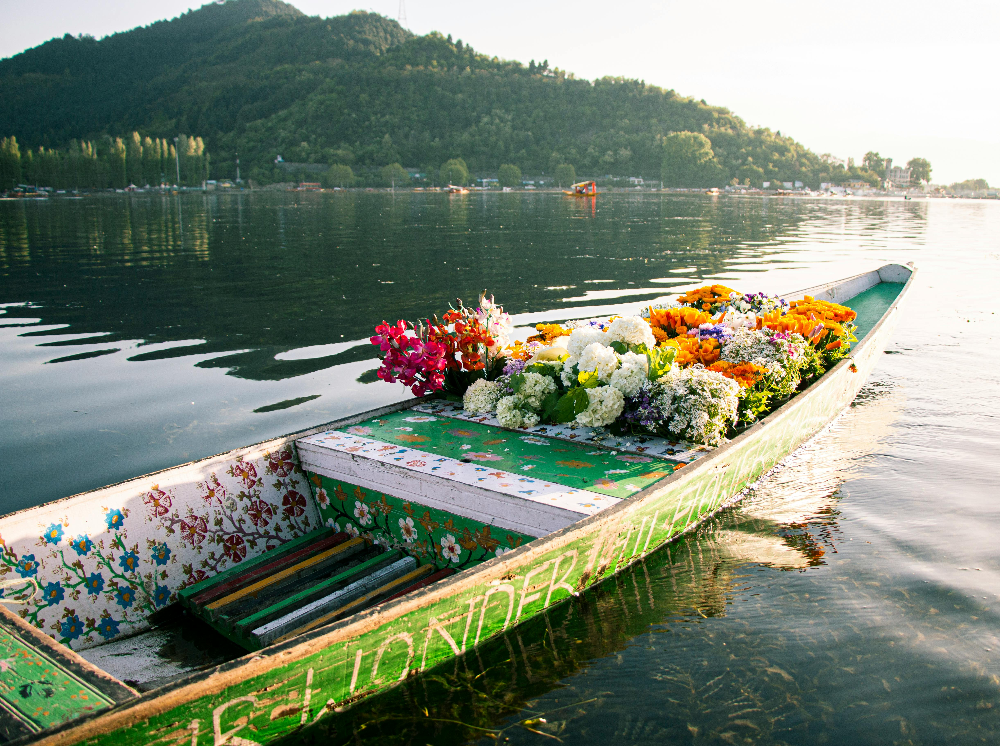
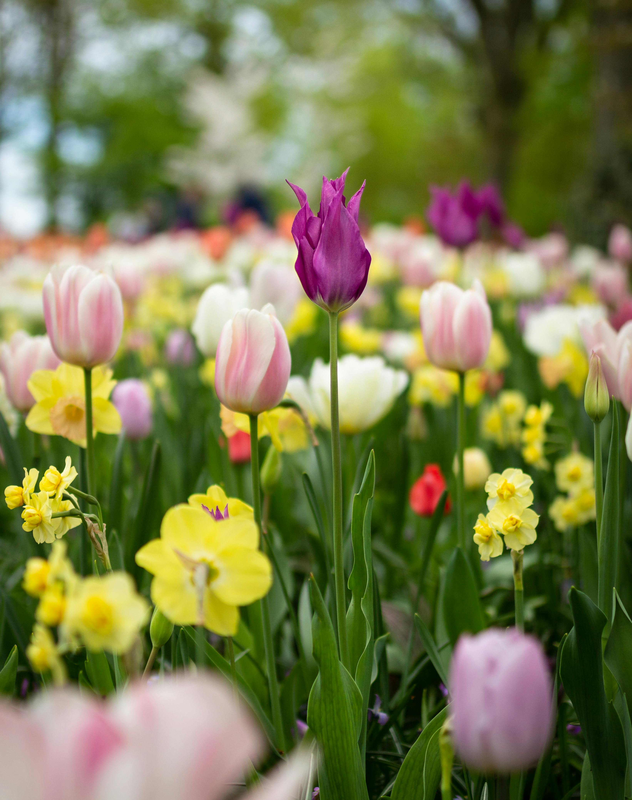

Jammu and Kashmir

Srinagar

Pahalgam

Gulmarg

Dal Lake

Shalimar Bagh
Best Deal
Starts from 50,000
per person on twin sharing
6 Nights 7 Days
1 City 1 Country
Kashmir: Srinagar, Pahalgam, Gulmarg, Dal Lake
Days Plan
-
Day 1
Srinagar
Arrive at Srinagar, the summer capital of Jammu and Kashmir. Check-in at your hotel or houseboat. Shikara Ride on Dal Lake: After settling in, embark on a serene shikara ride on Dal Lake. Explore the floating gardens, historic houseboats, and vibrant markets along the lake's shores. Local Market Exploration: Visit the bustling local markets of Srinagar, such as Lal Chowk or Residency Road, to experience the city's vibrant culture and shop for souvenirs or traditional Kashmiri handicrafts. -
Day 2
Pahalgam
Depart for Pahalgam, a scenic town situated along the Lidder River amidst lush greenery and pine forests. Betaab Valley: Visit Betaab Valley, named after the Bollywood film "Betaab" shot here. Enjoy the stunning landscape of lush meadows, crystal-clear streams, and snow-capped peaks. Lidder River Rafting: Indulge in an exhilarating rafting experience on the Lidder River, offering thrilling rapids amidst breathtaking scenery. Explore Pahalgam: Take a leisurely walk along the banks of the Lidder River or explore the local market to shop for souvenirs or Kashmiri handicrafts. -
Day 3
Gulmarg
Depart for Gulmarg, a scenic hill station renowned for its lush meadows, snow-capped peaks, and adventure activities. Gondola Ride: Experience the world's second-highest cable car ride, the Gulmarg Gondola, offering breathtaking views of the Himalayas. Golf Course Visit: Explore the Gulmarg Golf Course, one of the highest golf courses in the world, nestled amidst picturesque surroundings. Leisure Time: Spend the evening leisurely exploring the charming streets of Gulmarg or relaxing amidst the serene natural beauty. -
Day 4
Dal Lake
Shikara Ride on Dal Lake: Experience the serene beauty of Dal Lake with a shikara ride. Glide through the floating gardens and enjoy the view of the surrounding mountains. Local Market Exploration: Visit the nearby local markets to get a taste of Srinagar's culture. Explore the vibrant stalls selling traditional Kashmiri handicrafts and souvenirs. -
Day 5
Rabindra Sarobar:
Start your day with a visit to the Academy of Fine Arts, a cultural institution showcasing works of art by renowned artists. Explore its galleries and attend any ongoing exhibitions. Rabindra Sarobar: Enjoy a morning walk or leisurely boat ride at Rabindra Sarobar, a tranquil lake surrounded by lush greenery. Treat your taste buds to the flavors of Bengali cuisine at a traditional restaurant. Marble Palace: Explore the opulent Marble Palace, known for its exquisite architecture, impressive art collection, and lush gardens. -
Day 5
Shalimar Bagh
Mughal Gardens Exploration: Shalimar Bagh: Explore Shalimar Bagh, one of the most beautiful Mughal gardens in Srinagar. Marvel at the terraced lawns, cascading fountains, and stunning pavilions. Learn about the history and architecture of this historic garden. Nishat Bagh: After exploring Shalimar Bagh, visit Nishat Bagh, another splendid Mughal garden located adjacent to Dal Lake. Enjoy the tranquility of the garden while admiring its exquisite design and scenic views. -
Day 6
Shankaracharya Temple
Shankaracharya Temple: Begin your day with a visit to Shankaracharya Temple. Climb up the steps to reach the temple and enjoy panoramic views of Srinagar.Spend the morning at leisure, relaxing at your accommodation or exploring the nearby surroundings. Shopping: Shop for souvenirs and local handicrafts at the markets of Srinagar. Purchase authentic Kashmiri textiles, carpets, and spices. Cultural Show: Attend a traditional Kashmiri cultural show in the evening, featuring folk music, dance, and performances. -
Day 7
Departure from Kashmir
Check out from your accommodation and transfer to Srinagar International Airport for your onward journey.
Tour Includes